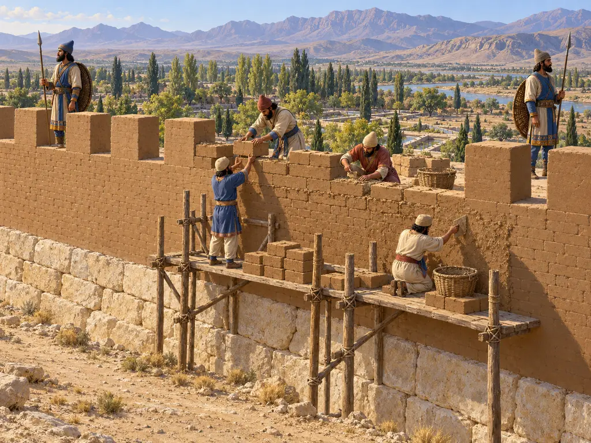
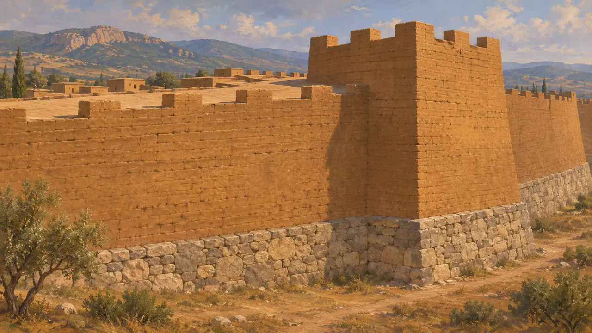
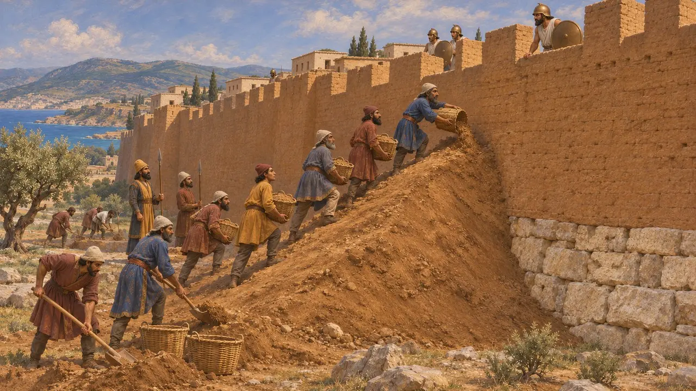
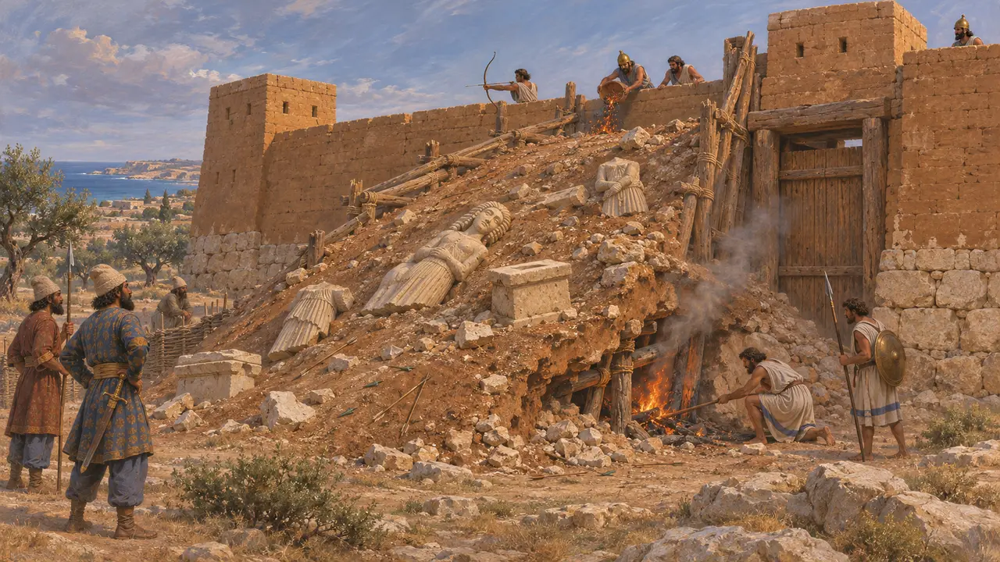
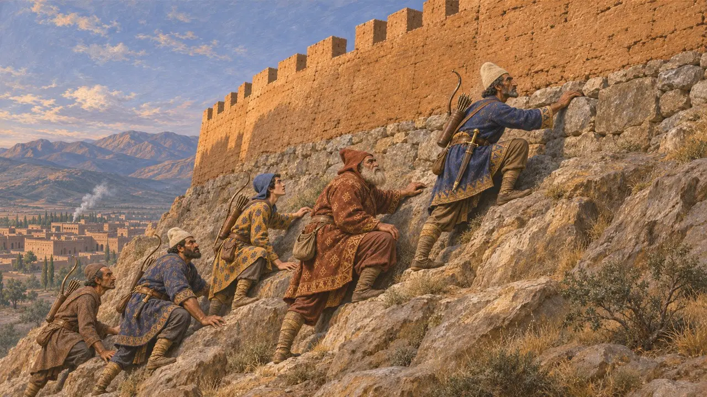
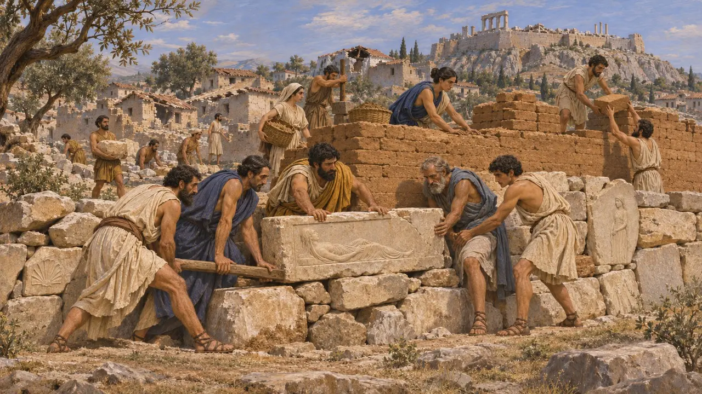

Mur défensif
Murs de brique crue sur fondations de pierre, Proche-Orient et Égée, VIe-Ve siècle av. J.-C.
Les cités et les sites royaux de l'Empire perse étaient ceints de murs de brique crue élevés sur des fondations de pierre, souvent flanqués de tours et percés de portes fortifiées. Les fouilles et les auteurs grecs montrent à la fois comment ces murs étaient bâtis et comment les armées perses en venaient à bout : rampes de terre, sapes et assauts.
Dans le jeu : Le mur se trace sur des fondations de pierre, avec un pavillon d'entrée là où il croise une route ; des soldats s'y postent et des maçons le réparent. Les pillards des collines le brisent, l'incendient, l'escaladent ou le sapent, bien que, dans les sources, ces méthodes soient celles d'armées organisées.

Brique crue sur socle de pierre
Dans les sourcesLe mur courant de l'époque reposait sur une fondation de moellons ou de pierre taillée qui tenait l'humidité à distance et portait une haute élévation de brique crue séchée au soleil. À Sardes, les fouilleurs ont mis au jour une muraille lydienne épaisse d'environ 20 mètres à sa base, bâtie selon ce principe. À Persépolis, un mur de brique crue flanqué de tours longeait les bords de la terrasse et gravissait la pente de la montagne qui la domine.
E. F. Schmidt, Persepolis I, 1953; N. Cahill, 'The Persian Sack of Sardis', in J. Curtis and St J. Simpson (eds), The World of Achaemenid Persia, 2010

Comment les armées perses prenaient les villes fortifiées
Récit antiqueHérodote rapporte qu'après la conquête de la Lydie par Cyrus, Harpage prit les cités ioniennes en élevant des terrassements contre leurs murailles. Il raconte comment les Perses tentèrent de creuser des mines sous les murs de Barcé, en Libye, et comment les défenseurs découvrirent les galeries en frappant le sol d'un bouclier de bronze. Lors de la révolte de Chypre, dit-il, Soles résista le plus longtemps et tomba au cinquième mois, quand les Perses eurent sapé son rempart.
Herodotus 1.162; Herodotus 4.200; Herodotus 5.115

La rampe de siège de Paléopaphos
Dans les sourcesÀ l'ancienne Paphos, à Chypre, les fouilleurs ont dégagé une rampe de terre, de pierre et de bois élevée contre le rempart près de la porte nord-est, sans doute lors de la révolte, vers 498 av. J.-C. On y avait jeté des statues et des autels brisés provenant d'un sanctuaire voisin, et des centaines de pointes de flèches gisaient alentour. Les défenseurs creusèrent des galeries sous la rampe et en incendièrent les étais.
F. G. Maier and V. Karageorghis, Paphos: History and Archaeology, 1984

La chute de Sardes
ContestéSelon Hérodote, les hommes de Cyrus prirent la citadelle de Sardes en escaladant un pan escarpé et non gardé, où l'on avait vu un Lydien descendre ramasser un casque tombé. Les fouilles montrent que le rempart de la ville basse fut pris d'assaut et incendié au milieu du VIe siècle : la couche de destruction renferme des pointes de flèches et des corps de soldats. L'année exacte reste débattue, car la ligne de la Chronique de Nabonide autrefois lue comme nommant la Lydie est endommagée.
Herodotus 1.84; N. Cahill, 'The Persian Sack of Sardis', 2010; Nabonidus Chronicle

Les murailles d'Athènes après 479 av. J.-C.
Récit antiqueHérodote rapporte que Mardonios abattit ce qui restait des murailles d'Athènes avant de se replier en Béotie en 479 av. J.-C. Thucydide raconte comment les Athéniens rebâtirent ensuite leur muraille à la hâte avec toutes les pierres à portée de main, stèles funéraires comprises, tandis qu'à Sparte Thémistocle gagnait du temps face aux objections des Spartiates.
Herodotus 9.13; Thucydides 1.89-93
Sources
- Herodotus, Histories
- N. Cahill, 'The Persian Sack of Sardis', in J. Curtis and St J. Simpson (eds), The World of Achaemenid Persia, 2010
- F. G. Maier and V. Karageorghis, Paphos: History and Archaeology, 1984
- E. F. Schmidt, Persepolis I, 1953
- Thucydides 1.89-93
- P. Briant, From Cyrus to Alexander, 2002